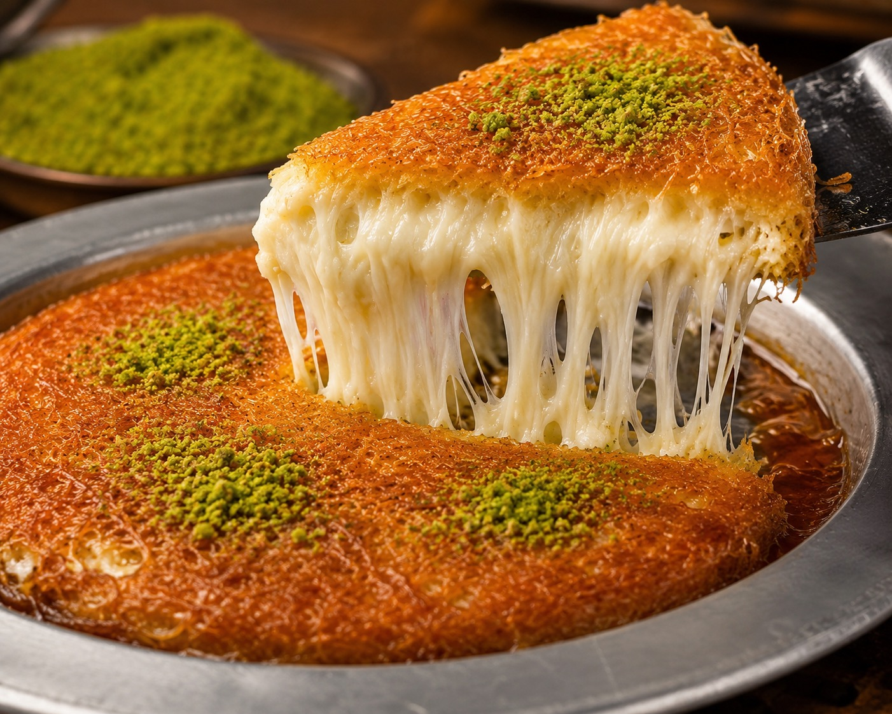
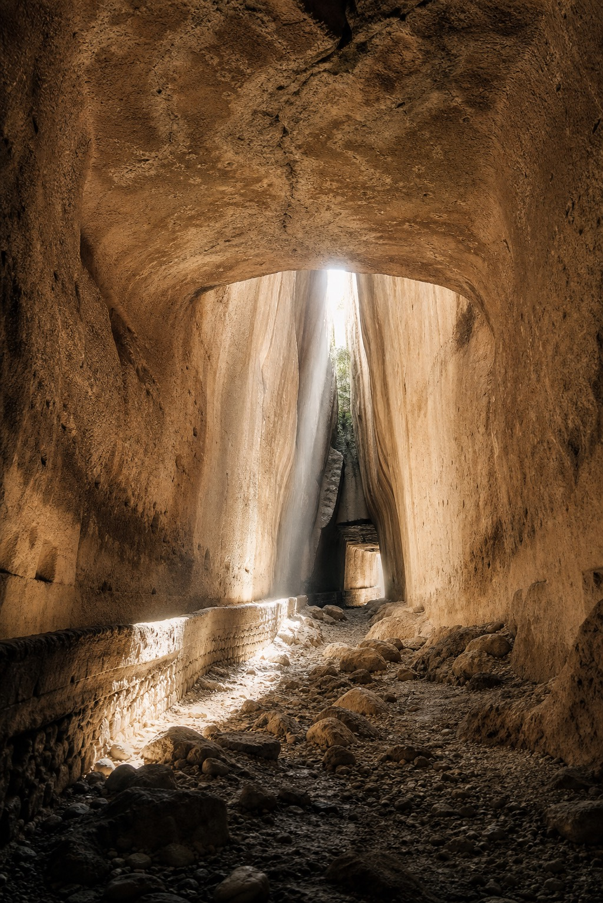
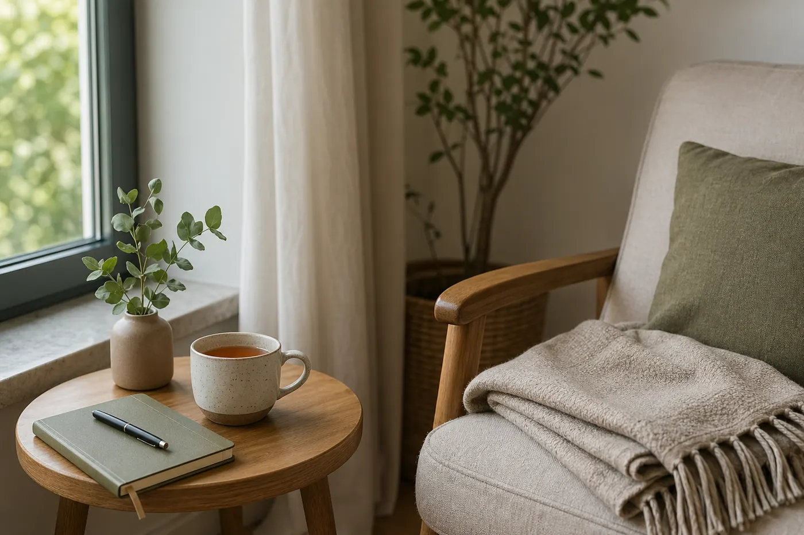
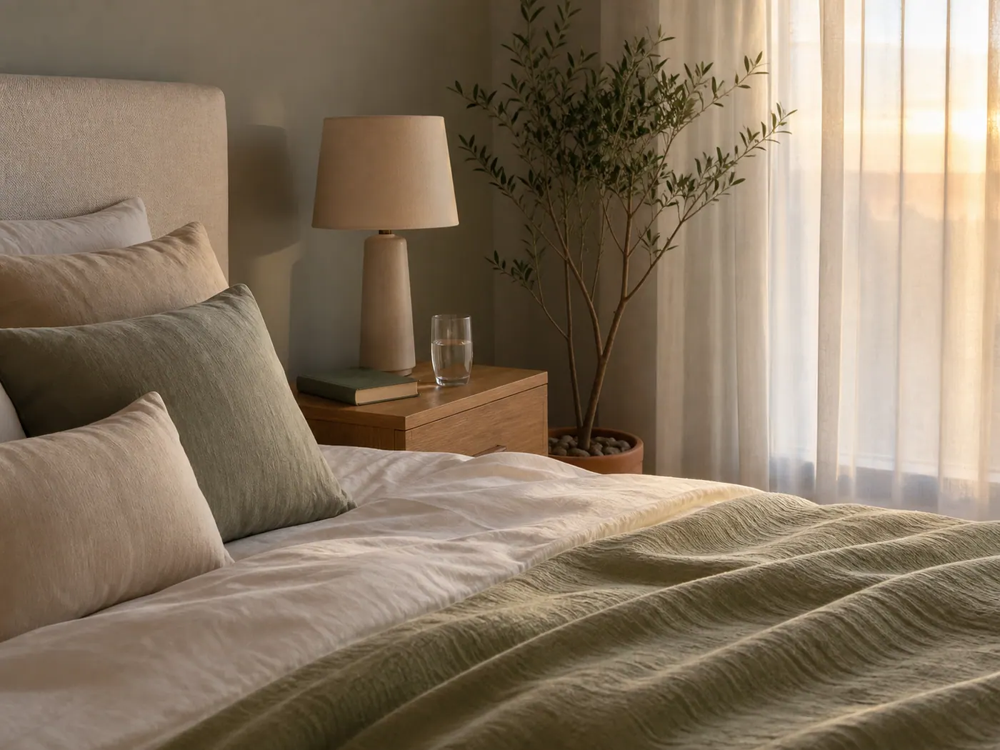

Çileğin Tohumları ve Hatay'ın Hafızası
Yayladağı çileği üzerinden Hatay'ın deprem sonrası hafızası, travma, dayanıklılık ve yeniden umut üretebilmek üzerine.
Yazının tamamını okuPsikiyatri blogu
Psikiyatrik durumları, değerlendirme süreçlerini ve tedavi yaklaşımlarını açık ve anlaşılır bir dille ele alan bilgilendirici içerikler.
Yayladağı çileği üzerinden Hatay'ın deprem sonrası hafızası, travma, dayanıklılık ve yeniden umut üretebilmek üzerine.
Yazının tamamını okuPatolojik kumar bağımlılığında kaybı geri alma döngüsü, belirsiz ödül etkisi, ailelerin fark etmesi ve tedavi süreci üzerine.
Yazının tamamını oku
Künefe, Freud'un id-ego-süperego kuramı ve Hatay'ın çok kültürlü yapısı üzerinden ruhsal dengeyi anlatan sıcak bir psikoloji yazısı.
Yazının tamamını oku
Titus Tüneli üzerinden anksiyete, zihnin alarm sesi, terapi sürecinin ara bölgesi ve ışığa doğru yürümek üzerine.
Yazının tamamını oku
Cinsel işlev bozukluklarında anksiyete, depresyon, özgüven, ilişki bağları ve multidisipliner yaklaşımın klinik önemi üzerine.
Yazının tamamını okuPsikiyatrik ilaçlarda tedaviye uyum, ilaç reddi, içgörü, stigma ve tedavi direncinin gerçek yaşam içindeki karşılığı üzerine.
Yazının tamamını oku
Aşkın dopamin, oksitosin, empati, bağlanma ve insan ruhundaki iyileştirici karşılığı üzerine şiirsel bir değerlendirme.
Yazının tamamını oku
Narsisizmi yalnızca kibir değil; kırılgan özbenliği koruyan karmaşık bir psikolojik yapı olarak ele alan yazı.
Yazının tamamını okuSadakati yalnızca bağlı kalmak değil; güveni korumak, ortak değerlere sahip çıkmak ve ilişkide emek vermek olarak ele alan bir yazı.
Yazının tamamını okuGüçlü görünmeye çalışırken ihtiyaçlarımızı unutmak, yardım istemek ve kendimizi yeniden dinlemek üzerine.
Yazının tamamını okuSürekli güçlü görünmeye ve her şeye yetişmeye çalışırken tükenmek; durabilmek, sınırları korumak ve kendine yeniden alan açmak üzerine.
Yazının tamamını oku
Travmanın gündelik yaşama sessizce sızan etkileri, kendine şefkat göstermek ve kırılan yerden yeniden başlamak üzerine.
Yazının tamamını oku
Depresyonun belirtileri, klinik değerlendirme süreci, diğer duygudurum tabloları ve ne zaman destek alınması gerektiği.
Yazının tamamını oku
Kaygının zihinsel, bedensel ve davranışsal belirtileri ile değerlendirme ve tedavi yaklaşımları.
Yazının tamamını oku
İstenmeyen düşünceler, tekrar eden davranışlar, nörobiyolojik mekanizmalar ve tedavi süreci.
Yazının tamamını oku
Depresif, manik ve hipomanik dönemler; tanı, tedavi, düzenli takip ve koruyucu yaklaşım.
Yazının tamamını oku
Dikkat dağınıklığı, dürtüsellik, planlama güçlükleri ve erişkin DEHB değerlendirmesi.
Yazının tamamını oku
Stresin uyku üzerindeki etkisi, uykusuzluğun ruh sağlığıyla ilişkisi ve sağlıklı uyku önerileri.
Yazının tamamını oku